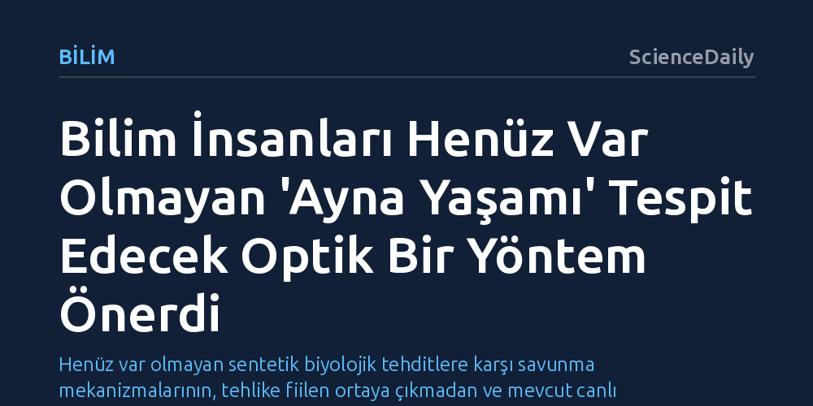

BILIM · ScienceDaily · 2026-10-25
Araştırmacılar, laboratuvarda üretilmesi halinde ekosistemler için büyük risk taşıyan varsayımsal ayna yaşamı dairesel polarize ışıkla tespit edecek bir yöntem geliştirdi. 3D gözlük mantığıyla çalışan floresan problar, ters kiraliteye sahip moleküler yapıları henüz bu organizmalar yaratılmadan hücre düzeyinde teşhis etmeyi sağlıyor.
Henüz var olmayan sentetik biyolojik tehditlere karşı savunma mekanizmalarının, tehlike fiilen ortaya çıkmadan ve mevcut canlı örnekleriyle geliştirilebileceğini gösteriyor.

Yeryüzündeki tüm canlı organizmalar, moleküler düzeyde belirli bir geometrik yönelime bağlıdır. Canlılığın temel yapı taşları olan amino asitler ve şekerler, tıpkı sağ ve sol ellerimiz gibi birbiriyle tam örtüşmeyen iki farklı ayna görüntüsüne sahiptir. Kimyada 'kiralite' olarak adlandırılan bu özellik açısından dünyadaki yaşam tek taraflıdır. 'Ayna yaşam' ise doğada bulunan bu organik moleküllerin tam tersi üç boyutlu dizilime sahip yapı taşlarıyla inşa edilmiş, henüz sadece kuramsal düzeyde tartışılan yapay bir canlı formunu ifade eder.
Henüz laboratuvarda kendi kendine çoğalabilen bir ayna organizma üretilmiş değil; ancak bilim insanları ve uluslararası güvenlik otoriteleri bu olasılığı şimdiden en kritik biyolojik risklerden biri olarak değerlendiriyor. En büyük endişe, ters yüz edilmiş moleküler yapılara sahip böylesi bir canlının doğal savunma mekanizmalarını tamamen etkisiz kılabilmesidir. İnsanların, hayvanların ve bitkilerin bağışıklık sistemleri bu simetrik organizmaları tanıyamayabilir; bu da olası bir sızıntıda ayna canlıların kontrolsüzce yayılarak yeryüzü ekosistemlerine öngörülemez zararlar vermesi riskini doğurur.
Strathclyde ve Durham üniversitelerinden araştırmacılar, henüz var olmayan bu tehdide karşı savunma hattını erkenden kurabilmek için optik fiziğe dayalı özgün bir teşhis yöntemi önerdi. Yöntem, dairesel polarize lüminesans (CPL) adı verilen ve ışığın dairesel dönüş yönünü analiz eden fiziksel bir ilkeye dayanıyor. Bu yaklaşım, sinema salonlarında üç boyutlu derinlik algısı yaratmak için kullanılan polarize gözlük teknolojisiyle aynı temel mekanizmayı paylaşıyor.
Araştırma ekibinin tasarladığı sistemde, hücre içindeki belirli yapılara hedeflenmiş özel floresan problar kullanılıyor. Bu moleküler problar hedeflerine bağlandığında, sağa ya da sola dönen karakteristik ışık sinyalleri yayıyor. Işığın bu dönüş yönü analiz edilerek incelenen biyolojik yapının geleneksel bir canlıya mı yoksa ters çevrilmiş bir ayna organizmasına mı ait olduğu bir tür optik parmak izi gibi net biçimde belirlenebiliyor.
Yöntemin sahadaki güvenilirliği araştırmacılar için en öncelikli konulardan biri. Tek bir floresan probun biyolojik karmaşa içinde yanıltıcı sinyaller üretme riskini göz önüne alan ekip, hücrenin farklı bileşenlerini aynı anda hedefleyen çoklu prob kombinasyonları geliştirmeyi öneriyor. Farklı hücresel yapılardan gelen CPL sinyalleri bir arada değerlendirildiğinde, yanlış alarm verme olasılığı en aza indiriliyor ve teşhisin doğruluğu güvence altına alınıyor.
Önerilen yaklaşımın en pratik üstünlüğü ise yöntemi geliştirmek ve test etmek için gerçek bir ayna organizma üretmeye gerek bırakmamasıdır. Bilim insanları mevcut doğal hücreleri kullanarak sistemi şimdiden kalibre edebiliyor ve doğrulayabiliyor. Ayrıca bu optik test tekniğinin laboratuvarlarda yaygın olarak bulunan mikroskoplara, kameralara ve hücre plakası okuyucularına kolaylıkla uyarlanabileceği, böylece farklı ortamlarda geniş ölçekli taramalar yapılabileceği belirtiliyor.
Geliştirilen tespit sistemi henüz tam anlamıyla son ürün olarak deneysel ortamda kanıtlanmış değil; ancak bilim dünyası tehdidin gerçekleşmesini beklemenin çok geç olacağı görüşünde birleşiyor. Çalışmanın liderlerinden Dr. Lewis MacKenzie, yaklaşımın mantığını şu sözlerle özetliyor: "Ayna yaşamın yarın ortaya çıkmasını beklemiyoruz; ancak ortaya çıkarsa sonuçları çok ağır olabilir ve tespit yöntemlerini ihtiyaç duyulmadan önce geliştirmek mantıklıdır."
Potansiyel tehlikenin büyüklüğü Birleşmiş Milletler Genel Sekreterliği Bilimsel Danışma Kurulu ve İngiltere Hükümeti Bilim Ofisi gibi üst düzey karar vericilerin de gündemine girmiş durumda. Uzmanlar ayna moleküllerle çoğalabilen organizma üretme araştırmalarına sıkı denetimler ve sınırlamalar getirilmesini öneriyor. Henüz ortada somut bir canlı yokken geliştirilen bu erken tespit yöntemi, sentetik biyolojinin öngörülemez risklerine karşı reaktif olmak yerine önleyici bir kalkan oluşturmanın en somut örneğini sunuyor.